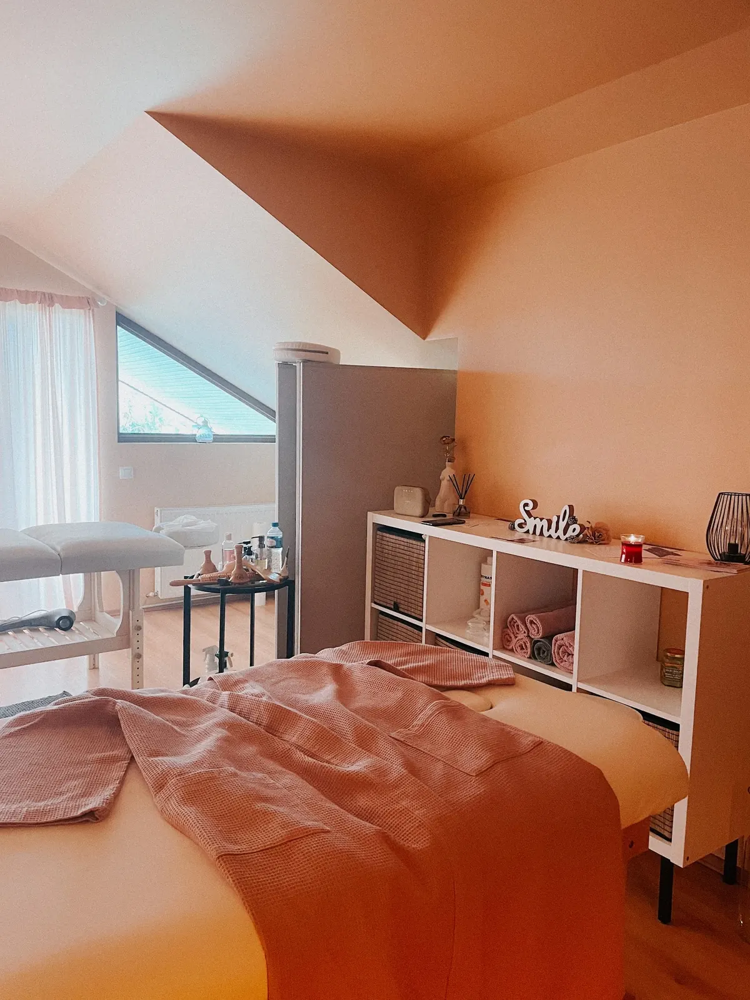
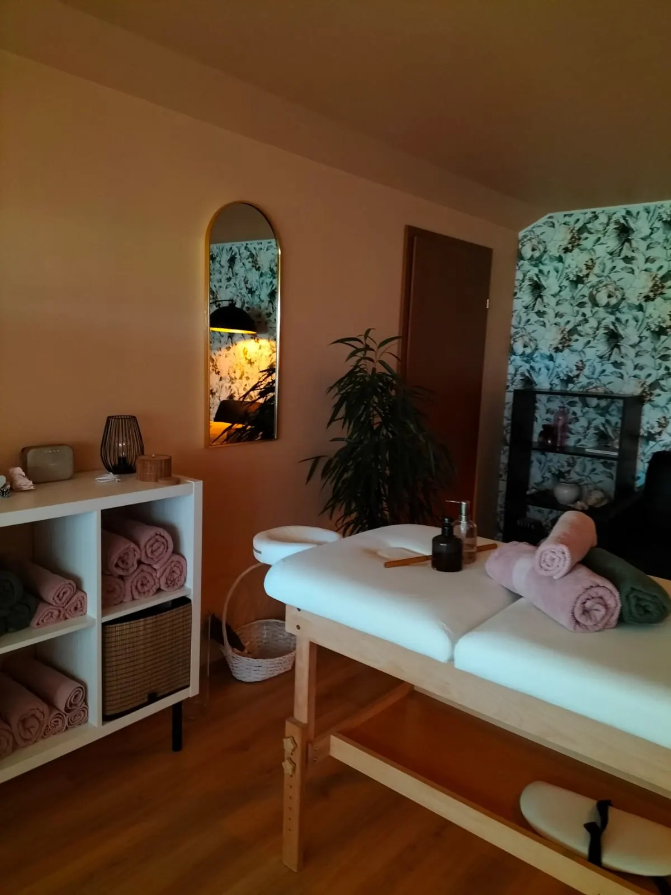
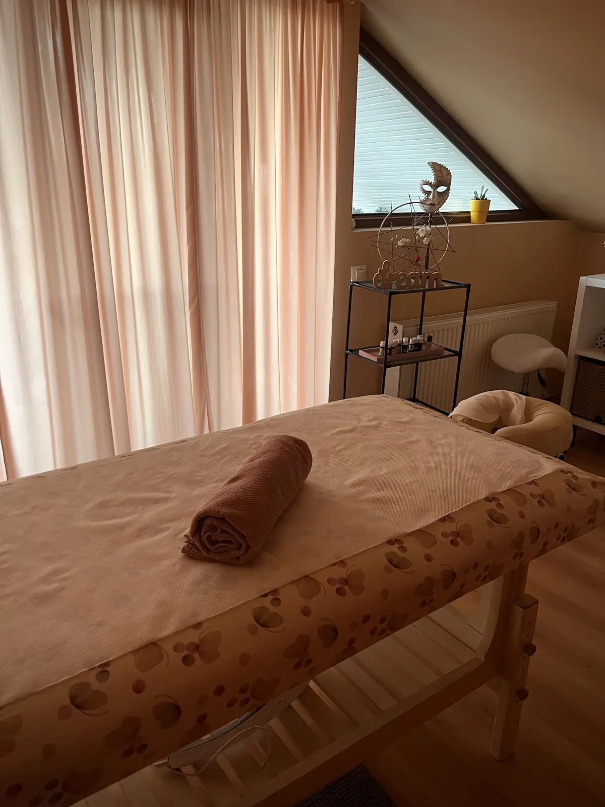
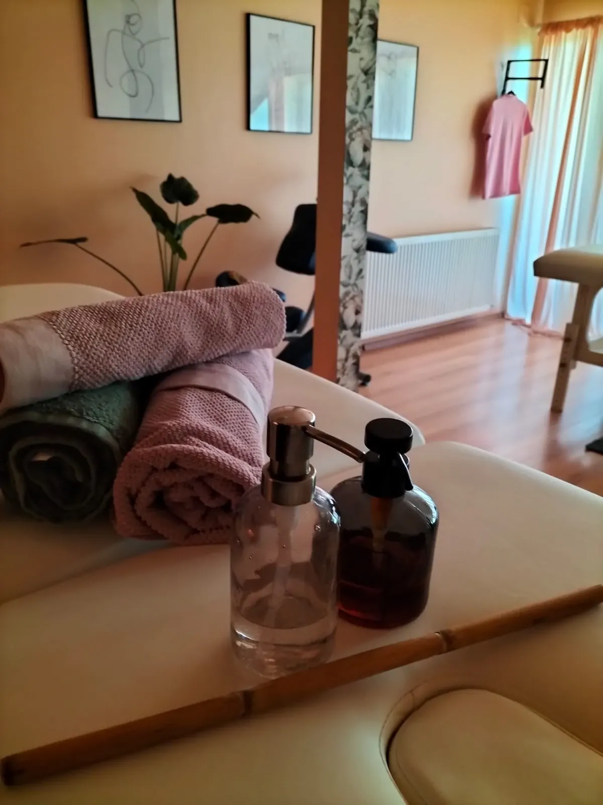
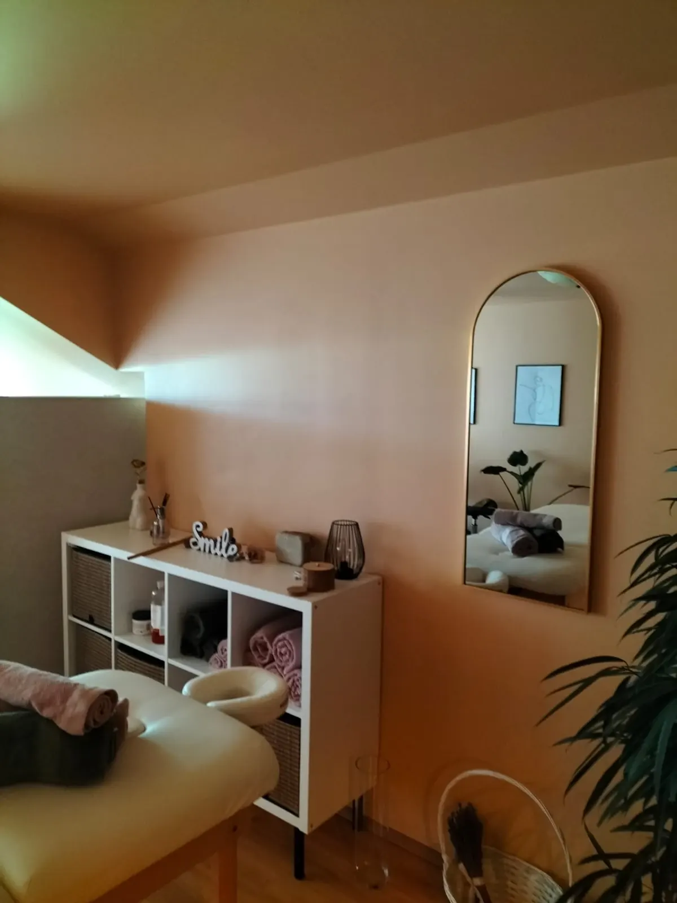
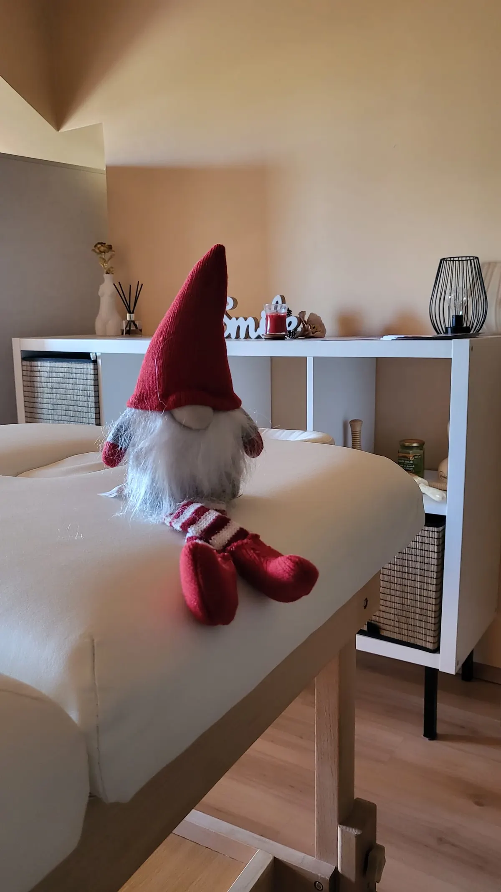

{{Inspiră patru.|Breathe in four.|Inspira quatro.}} {{Ține șapte.|Hold seven.|Segura sete.}} {{Expiră opt.|Breathe out eight.|Expira oito.}} — Kineos Massage & Wellness, Iași
{{Apoi întinde-te. Restul ritmului îl ține Kineos — masaj într-o mansardă caldă, cu lumină de după-amiază, pe Strada Stejar 86.|Then lie down. Kineos keeps the rest of the rhythm — massage in a warm attic room with afternoon light, on Strada Stejar 86.|Depois deite-se. O resto do ritmo fica com a Kineos — massagem numa mansarda quente, com luz de fim de tarde, na Strada Stejar 86.}}

{{Nouăsprezece secunde. Atât durează un ciclu.|Nineteen seconds. That’s one cycle.|Dezanove segundos. É o que dura um ciclo.}}
{{4-7-8 e un exercițiu simplu de respirație: patru secunde tragi aer pe nas, șapte îl ții, opt îl dai afară încet pe gură. Cercul de pe pagina asta respiră exact așa. Încearcă trei cicluri înainte să suni.|4-7-8 is a simple breathing exercise: four seconds in through the nose, hold for seven, eight seconds slowly out through the mouth. The circle on this page breathes exactly like that. Try three cycles before you call.|O 4-7-8 é um exercício simples de respiração: quatro segundos a inspirar pelo nariz, sete a segurar, oito a expirar devagar pela boca. O círculo desta página respira exatamente assim. Experimente três ciclos antes de ligar.}}
{{Dacă simți amețeală, revino la respirația ta obișnuită.|If you feel dizzy, go back to breathing normally.|Se sentir tonturas, volte à sua respiração normal.}}
{{Alegi felul. Noi alegem ritmul.|You choose the kind. We set the pace.|Escolhe o tipo. Nós damos o ritmo.}}
{{Lista exactă de masaje, duratele și prețurile se confirmă cu Kineos.|The exact list of massages, durations and prices is being confirmed with Kineos.|A lista exata de massagens, durações e preços está a confirmar com a Kineos.}} {{de confirmat|to be confirmed|a confirmar}}
{{O mansardă cu pereți de caisă.|An attic room with apricot walls.|Uma mansarda de paredes cor de alperce.}}
{{Tavan în pantă, tapet cu frunze, prosoape rulate în rafturi și o oglindă în arcadă. Lumina vine pe geamul din acoperiș.|A sloping ceiling, leaf-print wallpaper, towels rolled on the shelves and an arched mirror. The light comes in through the roof window.|Teto inclinado, papel de parede com folhas, toalhas enroladas nas prateleiras e um espelho em arco. A luz entra pela janela do telhado.}}



{{75 de recenzii, media 5,0.|75 reviews, a 5.0 average.|75 avaliações, média de 5,0.}}
{{Nota vine de la oameni care au stat deja pe masa din mansardă. Recenziile complete sunt pe pagina Kineos din Google Maps.|The rating comes from people who have already lain on the table in the attic. The full reviews are on the Kineos Google Maps page.|A nota vem de quem já se deitou na marquesa da mansarda. As avaliações completas estão na página da Kineos no Google Maps.}}
{{Citește recenziile|Read the reviews|Ler as avaliações}}{{Strada Stejar 86.|Strada Stejar 86.|Strada Stejar 86.}}
{{Sună înainte: o ședință ține ocupată camera, așa că programarea e regula.|Call ahead: a session keeps the room busy, so booking is the rule.|Ligue antes: uma sessão ocupa a sala, por isso marcar é a regra.}}
—
- Strada Stejar 86, 700327 Iași
- 0755 154 669
- {{Joi 08–20. Celelalte zile:|Thursday 08–20. Other days:|Quinta 08–20. Outros dias:}} {{de confirmat|to be confirmed|a confirmar}}
{{Feluri de a lăsa umerii jos.|Ways to drop your shoulders.|Maneiras de baixar os ombros.}}
{{Fiecare are alt ritm și altă presiune. Lista exactă, duratele și prețurile se confirmă cu Kineos — până atunci, spune-ne ce simți și te îndrumăm.|Each has its own pace and pressure. The exact list, durations and prices are being confirmed with Kineos — until then, tell us how you feel and we’ll point you the right way.|Cada uma tem o seu ritmo e a sua pressão. A lista exata, durações e preços estão a confirmar com a Kineos — até lá, diga-nos como se sente e nós orientamos.}}
{{Patru lucruri care ajută.|Four things that help.|Quatro coisas que ajudam.}}
- {{Vino cu cinci minute mai devreme|Arrive five minutes early|Chegue cinco minutos antes}}
{{Cât să urci, să-ți lași haina și să respiri de trei ori.|Enough to climb up, leave your coat and breathe three times.|O suficiente para subir, deixar o casaco e respirar três vezes.}}
- {{Nu veni după o masă mare|Don’t come right after a big meal|Não venha logo depois de uma refeição grande}}
{{Stai întins pe burtă o bună parte din timp.|You’ll spend a good part of it lying on your front.|Vai passar boa parte do tempo deitado de barriga para baixo.}}
- {{Spune ce te deranjează|Say what bothers you|Diga o que o incomoda}}
{{Gâtul, umerii, spatele de la birou — și cât de fermă vrei presiunea.|Neck, shoulders, the desk back — and how firm you want the pressure.|Pescoço, ombros, as costas do escritório — e a pressão que prefere.}}
- {{Ai o afecțiune sau ești însărcinată?|A health condition, or pregnant?|Tem alguma condição de saúde ou está grávida?}}
{{Spune la programare. Masajul de wellness nu înlocuiește un tratament medical.|Mention it when booking. Wellness massage doesn’t replace medical treatment.|Diga ao marcar. A massagem de bem-estar não substitui um tratamento médico.}}
{{Felul, durata, ziua. Atât.|The kind, the length, the day. That’s it.|O tipo, a duração, o dia. Só isso.}}
{{Alegi mai jos, iar mesajul se scrie singur. Îl trimiți pe WhatsApp sau prin SMS, iar Kineos îți confirmă ora.|Choose below and the message writes itself. Send it on WhatsApp or by SMS, and Kineos confirms your time.|Escolha abaixo e a mensagem escreve-se sozinha. Envie por WhatsApp ou SMS e a Kineos confirma a hora.}}
{{Sub acoperiș, unde se aude doar respirația.|Under the roof, where you only hear breathing.|Debaixo do telhado, onde só se ouve a respiração.}}
{{O cameră, o masă, lumină caldă. Așa arată Kineos pe dinăuntru.|One room, one table, warm light. This is Kineos on the inside.|Uma sala, uma marquesa, luz quente. Assim é a Kineos por dentro.}}


{{Mic, cald, al tău cât durează ședința.|Small, warm, yours for the session.|Pequeno, quente, seu durante a sessão.}}
{{Roz și verde salvie, stivuite în rafturi lângă masă.|Pink and sage green, stacked on the shelves by the table.|Rosa e verde-salva, empilhadas nas prateleiras junto à marquesa.}}
{{Geamul în pantă și perdelele lungi păstrează lumina blândă.|The slanted window and long curtains keep the light soft.|A janela inclinada e os cortinados compridos mantêm a luz suave.}}
{{Un felinar negru, plante verzi, un „Smile” de lemn pe raft. Nimic de spital.|A black lantern, green plants, a wooden “Smile” on the shelf. Nothing clinical.|Uma lanterna preta, plantas verdes, um “Smile” de madeira na prateleira. Nada de clínica.}}
Strada Stejar 86.
{{Un telefon, o adresă, o cameră caldă. Sună sau scrie — răspunsul vine de la Kineos.|One phone, one address, one warm room. Call or write — the answer comes from Kineos.|Um telefone, uma morada, uma sala quente. Ligue ou escreva — a resposta vem da Kineos.}}